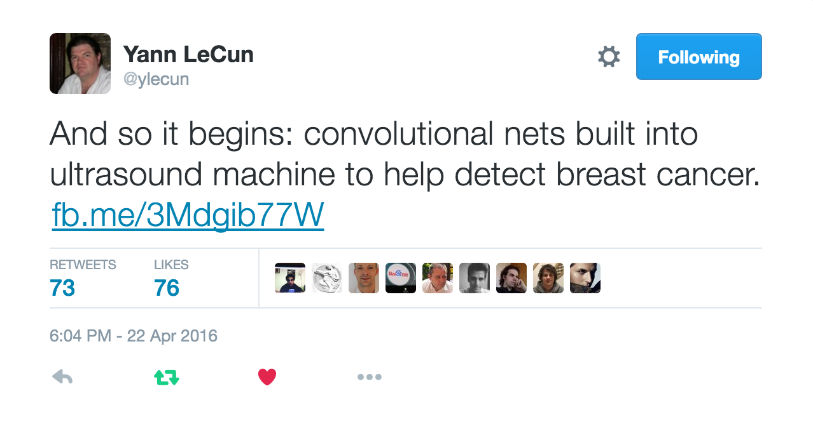
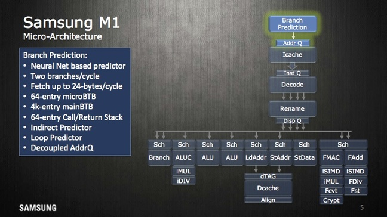
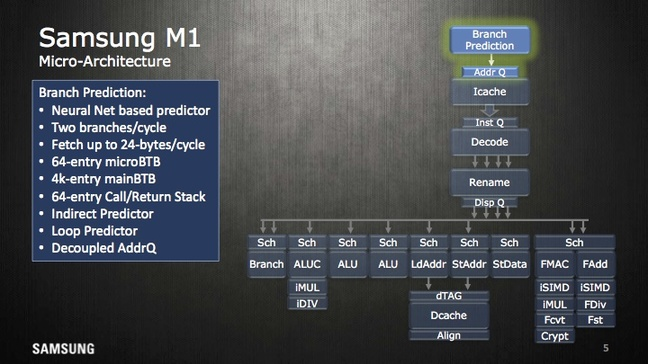

Introduction to Machine Learning with TensorFlow Playground
- strong AI vs weak AI
What is machine learning?
science of getting computers to act without being explicitly programmed
Motivation: How does data processing work?
Creating the 'model' with Classic Coding

Creating the 'model' with Supervised Machine Learning

Unsupervised learning works without training and human supervision
Applications of machine learning?



 

Machine learning has become mainstream

An add from BART train, Bay Area
Main application of Supervised Learning: Classification

Regression is the other: inferring a continuous function from given data points
Is classification at all relevant?
Should a car break or not?
Does that look like breast cancer or not?
Should this pixel of a b/w picture be blue?
Does this look like a fraud transaction?
Will the machine code branch here?
Exercise: Come up with more real world examples where machine learning could be applied
Talk to your neighbor
5 minutes
Deep Neural Networks
Class of machine learning strategies
Mostly used for
- supervised learning
- classification
Based on the idea of simulating brain functions
Machine Learning vs Artificial Intelligence

Can Machines really think?
Strong AI vs Weak AI
CREATE BASED ON NORWIG
The perceptron - where it all begins
- mathematical model of a biological neuron
- creates a single output based on sum of many weighted inputs
- uses a activation function to create (a slightly) non-linear component

Implementing it in pure JavaScript
// Initial weights
let w0 = 3, w1 = -4, w2 = 2;
function perceptron(x1, x2) {
const sum = w0 + w1 * x1 + w2 * x2;
return activation(sum);
}
function activation(z) {
// in this case a sigmoid function (alt.: tanh, linear, relu)
return 1 / (1 + Math.exp(z * -1));
}
Visualizing what a neuron can do
can emulate most logic functions (NOT, AND, OR, NAND)
- output separates plane into two regions using a line
- such regions are called linearly separable
- can be trained by adjusting weights of inputs based on error in output
percepton training visualization (initial version provided as a courtesy of Jed Borovik)
XOR - What a neuron can NOT do
http://www.theprojectspot.com/tutorial-post/introduction-to-artificial-neural-networks-part-1/7
Because it would require two lines for separation
A single neuron is not very powerful
but becomes much more powerful when organized in a network
Introducing Feedforward Neural Networks
https://en.wikipedia.org/wiki/Feedforward_neural_network
Arraging many Neurons in layers
Using the Tensorflow Playground
Introducing our classification example
- dots are placed on a plane with a certain pattern
- two different kinds (either blue or orange)
- network shall learn that pattern
- uses a set of known dots for training
- then make predictions for dots it has not seen before

First layers takes inputs

x and y coordinate of a spot in our example
Middle layer(s) called hidden layer(s)
Just a single layer containing 3 neurons
Output layer creates output
in our example using a single neuron, tanh activation

again combining all weighted lines to determine two categories: blue or orange?
Each neuron creates a single line classification
Adding to the overall result combined by the output layer

This is the linear classification of the third neuron
Networks can learn
- you provide samples and the corresponding right answers
- errors between right answer and prediction are called loss
- they are propagated back to adjust weights of connections
- mathematically an optimisation (often Stochastic Gradient Descent)
Let's run it

Exercise: Configure a minimal neural network
Needs to make a decent classification for our example
Can you explain why it works?
Deep Neural Networks?
- theoretically: a single hidden layer can approximate any continuous function
- however: we do not know how to effectively train such a (large) single layer
- in practice: having multiple (smaller) layers allows for effectively training a network
Deep Neural Networks: More than one hidden layer

each neuron in one layer feeds all neurons in the next layer
Main Challenge: What is the best configuration for a given problem?
That means what architecture: How many layers, how many neurons, which activation function?
Solution: Try it out ...
... using searches over a set of hyper-parameters (might be expensive)
Or: use a pre-trained network (by people who have done that job for you already)
Convolutional Networks
special networks to process images
using different kinds of specialized layers
often used with pre-trained models
Google Inception Convolutional Network architecture to classify images

Intuition for Convolutional Networks
E.g. to recognize dogs (again a classification problem)

using an internal representation like

https://auduno.github.io/2016/06/18/peeking-inside-convnets/
Sometimes it is not that easy...

Dog vs Muffin
TensorFlow finds the Chihuahua!
TensorFlow is the full version of the Playground

Chihuahua (score = 0.68340)
Pomeranian (score = 0.02451)
Pekinese, Pekingese, Peke (score = 0.00751)
toy terrier (score = 0.00716)
beagle (score = 0.00645)
Using the pre-trained Inception model
It even found out about my secret ...